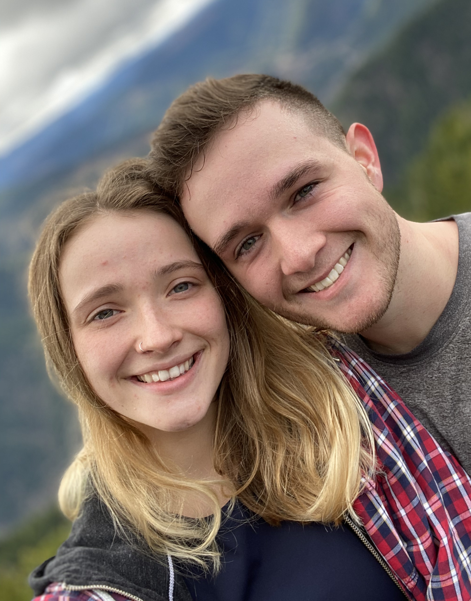

My girlfriend, Korrin, and my dog Clyde are my two main sources of happiness. I spend almost all of my time with one or both of them.
My girlfriend, Korrin, and my dog Clyde are my two main sources of happiness. I spend almost all of my time with one or both of them.
We love hiking and camping. Korrin and Clyde both go crazy if they don't get out and exercise!
I also try to be creative sometimes, through avenues other than coding. I spend a short time taking pictures and drawing every now and then. I really enjoy cooking!
Those street tacos are my own special "Vietnamese Street Tacos", as I call them. Street tacos of all variety are my favorite food to make, and my go-to dinner.